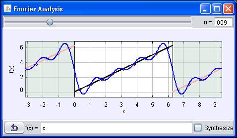
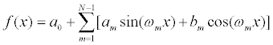

[Screen shot of a reconstructed sawtooth wave function using 9 Fourier coefficients.]
A Fourier series is a sum of sinusoidal (sine and cosine) functions with harmonic frequencies {ωm= mω0 } where m in an integer and ω0 = 2πf0 is the fundamental frequency. It is a useful mathematical tool because it can be used to analyze periodic functions with period T = 1/f0 by decomposing such a function into sinusoidal components with constant (Fourier) coefficients am and bm.

We refer to each term as having a certain (angular) frequency {ωm= mω0 } because the independent variable is often time. However, Fourier analysis is very general and the independent variable can, in fact, be anything including position so we write the unknown function in the generic form f(x).
Note: In order to simplify the model, the domain of the independent variable has been set to [0, 2π]. The domain can be changed in the Ejs model. Also, the Ejs model is inefficient because it sine and cosine functions are evaluated repeatedly with the same argument. A more efficient implementation would create an array of sin/cos values after the number of sample points has been set. A much more efficient implementation that uses the Fast Fourier Transformation (FFT) in the OSP numerics library is available.
The Fourier sine-cosine series simulation was created by Wolfgang Christian using the Easy Java Simulations (EJS) modeling tool. You can examine and modify the simulation's model if you have Ejs installed by right-clicking within the plot and selecting "Open Ejs Model" from the pop-up menu. Information about Ejs is available at: <http://www.um.es/fem/Ejs/> and in the OSP ComPADRE collection <http://www.compadre.org/OSP/>.